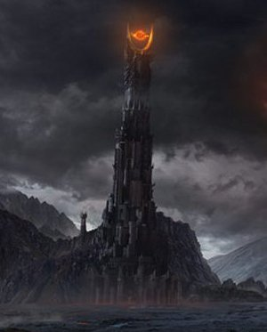

The Lord of the Rings
The Fellowship of the Ring
It starts with a party with the Hobbits celebrating Bilbo and Frodo's birthday September 22nd. Bilbo is just turning 111 years old. During the party, Bilbo uses the one ring and disappears from the crowd. Everyone is surprised and starts to look around for him. Gandalf knows that something was up with Bilbo. He tells Bilbo to give the ring away he leaves it for Frodo. Frodo sees the ring and gets more information from Gandalf. He is destined to be the new ring-bearer. He goes along with Sam, Merry and Pippin to destroy the ring of power. Along the way the go to Bree. They see a mysterious guy who is known as Strider. As Gandalf sent them off to look for a person named Strider stating his real name, which is Aragorn. He is the real one and they move on. Aragorn protects them as they go to Weathertop and get surrounded by Black Riders which is what they don't want. Frodo gets wounded by one of the Nazgûl. Glorfindel finds them and Frodo leaves with him and outrun the Black Riders. Elrond heals him and then they have a talk about the one ring and how to destroy it. They form "The Fellowship of the Ring" including Frodo, Sam, Merry, Pippin, Aragorn, Gandalf, Legolas, Boromir and Gimli. The Fellowship head south and past the Misty Mountains. They eventually get to Moria and Gandalf falls through the chasm of Khazad-dûm while protecting the Fellowship from the Balrog. The rest of them escapse safely. Boromir, overcome by the rings power wants it for himself as he confronts Frodo. Frodo chooses to go to Mordor and he and Sam sail of to Mordor alone.

The Two Towers
They start their new journey and Merry and Pippin are taken by orcs. Gimli, Legolas and Aragorn try to find the Hobbit's footsteps and eventually encounter with the Riders of Rohan. They make their way into Fangorn forest and see Treebeard who is an ent. The ents choose to go to war against the orcs of Isengard. They keep walking and Gandalf appears as he is reborn as Gandalf the White after his previous death in The Fellowship of the Ring. They fight Isengard with the help of Gandalf. Wormtongue tries to kill Gandalf by throwing an object called the palantir which is a magic seeing-stone. Pippin looks into the Palatir which makes it so Sauron would know his location and try to pursue him. Frodo and Sam meets Gollum, the previous ring-bearer before Bilbo as he is still looking for the ring. Gollum finds out that Frodo has the ring and tries to help Frodo and Sam with their journey to gain trust. As much as Gollum has corrupted Frodo's mind into trusting him, Sam still does not believe him as much. They went to the Black Gate of Mordor and found out it was closed. They later meet Faramir and Faramir is suspicious of the Hobbits for killing Boromir. They tell the truth and Gollum nearly gets killed but Frodo saves Gollum. Frodo, Sam and Gollum make it to Minas Morgul and they enter a secret passage. Frodo goes in by himself as Gollum abandons him. Frodo encounters Shelob, who stings Frodo. Frodo becomes unconcious almost as Sam saves the day by taking the one ring and Sting along with him. He saves Frodo and they continue their journey.

The Return of the King
It starts with Pippin and Gandalf riding east to Minas Tirith. They meet Denethor which is Faramir and Boromir's father. Pippin offers his sword in service to Gondor for the fact that Boromir gave his life to save the Hobbits from orcs. Mordor's armies stack up in Minas Tirith and Aragorn realizes that Rohan might not come in time before the battle starts. Aragorn, Legolas and Gimli leave and take the legendary path of the dead to Gondor. Faramir stays at his post as long as he can. When he retreats he gets shot by a poisoned arrow but it does not kill him. The Nazgûl come and kills Théoden but Éowyn and Merry kill the Black Captain which is also The Witch King of Angmar. Sam and Frodo continue their journey and disguise in orc outfit to pass to mount doom. While on their way, Gollum shows up and tries to take the ring from Frodo as Frodo rejects. But Gollum bites off Frodo's finger but then falls off the cracks of doom. The ring is gone and Frodo and Sam leave. Aragorn is then crowned as the King of Gondor and marries Arwen who is Elrond's daughter from Rivendell. The Hobbits return to the Shire. Some men show up as intruders and try to take down the Shire. They realize the secret leader is Saruman. Frodo's spares Saruman's life but Wormtongue, Saruman's servant betrays him and kills him. Then the Hobbits return to their normal life and Sam marries Rosie Cotton. Frodo decides to leave the Shire and sail over the Great Sea with Gandalf, Bilbo and the other ring-bearers to a peaceful paradise unknown in the West.